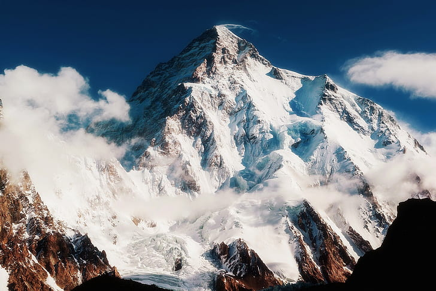
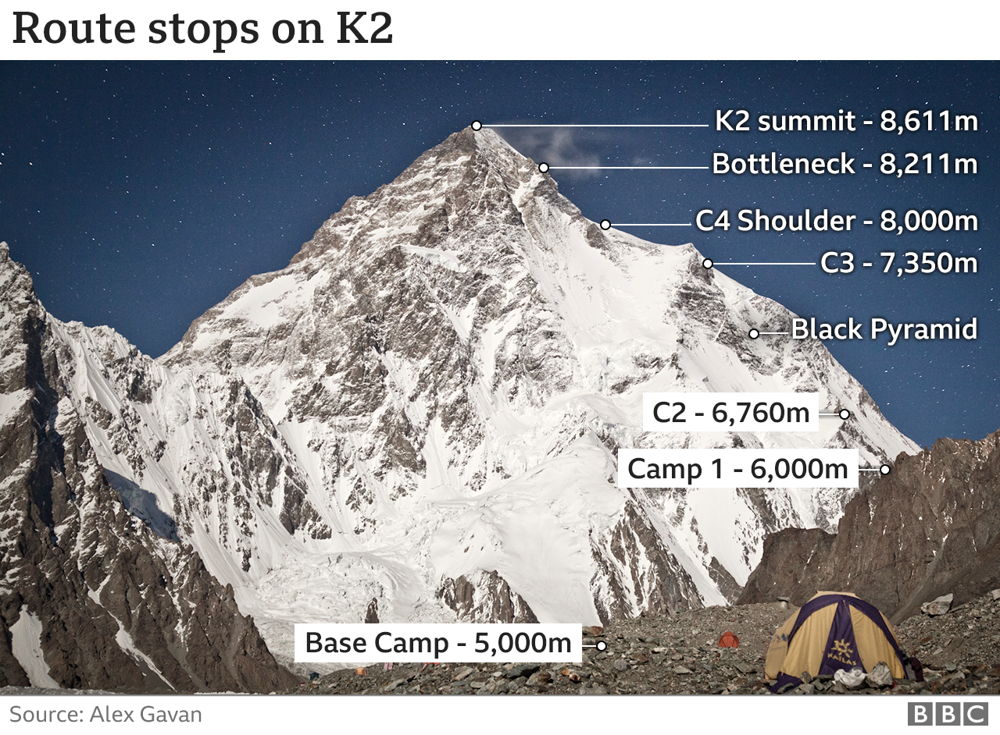

Purpose
The main purpose of this website is to pay tribute to the three brave heroes Muhammad Ali Sadpara, Jon Snorri, and JP. Mohr. These Brave soldiers sacrificed their lives for great ambition and Passion on the deadly mountain K2. I have learned from their lives "Nothing is bigger than your dreams and passion". So Never let Your dreams. This website provides detailed information about K2 Mountain and the lives of three brave soldiers
K2-Mountain
K2, at 8,611 metres (28,251 ft) above sea level, is the second highest mountain in the world, after Mount Everest at 8,848 metres (29,029 ft). It is located on the China–Pakistan border between Baltistan in the Gilgit-Baltistan region of northern Pakistan, and Dafdar Township in Taxkorgan Tajik Autonomous County of Xinjiang, China.K2 is the highest point of the Karakoram mountain range and the highest point in both Pakistan and Xinjiang.
K2 is known as the Savage Mountain after George Bell, a climber on the 1953 American Expedition, told reporters "It's a savage mountain that tries to kill you." Of the five highest mountains in the world, K2 is the deadliest; approximately one person dies on the mountain for every four who reach the summit. Also occasionally known as Chhogori, or Mount Godwin-Austen, other nicknames for K2 are The King of Mountains and The Mountaineers' Mountain, as well as The Mountain of Mountains after climber Reinhold Messner titled his book about K2 the same.

K2 is the only eight-thousand metre peak that has never been climbed from its eastern face. Ascents have almost always been made in July and August, the warmest times of the year; K2's more northern location makes it more susceptible to inclement and colder weather. The peak has now been climbed by almost all of its ridges. Although the summit of Everest is at a higher altitude, K2 is a more difficult and dangerous climb, due in part to its more inclement weather. As of June 2018, only 367 people have completed the ascent. There have been 86 deaths during attempted climbs, according to the list maintained on the list of deaths on eight-thousanders.
The Song dedicated to Mountaineers
Geographical setting
K2 lies in the northwestern Karakoram Range. It is located in the Baltistan region of Gilgit–Baltistan, Pakistan, and the Taxkorgan Tajik Autonomous County of Xinjiang, China. The Tarim sedimentary basin borders the range on the north and the Lesser Himalayas on the south. Melt waters from vast glaciers, such as those south and east of K2, feed agriculture in the valleys and contribute significantly to the regional fresh-water supply. K2 is ranked 22nd by topographic prominence, a measure of a mountain's independent stature, because it is part of the same extended area of uplift (including the Karakoram, the Tibetan Plateau, and the Himalaya) as Mount Everest, in that it is possible to follow a path from K2 to Everest that goes no lower than 4,594 metres (15,072 ft), at the Kora La on the Nepal/China border in the Mustang Lo. Many other peaks that are far lower than K2 are more independent in this sense. It is, however, the most prominent peak within the Karakoram range.
K2 is notable for its local relief as well as its total height. It stands over 3,000 metres (9,840 ft) above much of the glacial valley bottoms at its base. It is a consistently steep pyramid, dropping quickly in almost all directions. The north side is the steepest: there it rises over 3,200 metres (10,500 ft) above the K2 (Qogir) Glacier in only 3,000 metres (9,800 ft) of horizontal distance. In most directions, it achieves over 2,800 metres (9,200 ft) of vertical relief in less than 4,000 metres (13,000 ft). A 1986 expedition led by George Wallerstein made an inaccurate measurement showing that K2 was taller than Mount Everest, and therefore the tallest mountain in the world. A corrected measurement was made in 1987, but by then the claim that K2 was the tallest mountain in the world had already made it into many news reports and reference works.
The video About K2
Climbing routes and difficulties
There are a number of routes on K2, of somewhat different character, but they all share some key difficulties, the first being the extremely high altitude and resulting lack of oxygen: there is only one-third as much oxygen available to a climber on the summit of K2 as there is at sea level. The second is the propensity of the mountain to experience extreme storms of several days duration, which have resulted in many of the deaths on the peak. The third is the steep, exposed, and committing nature of all routes on the mountain, which makes retreat more difficult, especially during a storm. Despite many attempts the first successful winter ascents occurred only in 2021. All major climbing routes lie on the Pakistani side, which is also where base camp is located.
For Futher information Click Here